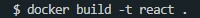
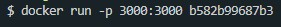
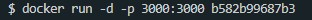
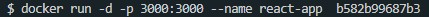
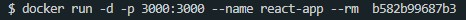

Основные команды
Образы и Контейнеры
Образ - это некоторый шаблон, на основании которого создается контейнер (докер) image - существует только для чтения, его изменить нельзя. Образы публикуются в DockerHub. Что бы запустить приложение необходимо на основании контейнера создать докер контейнер.
Для того что бы скачать образ мы можем зайти в DockerHub, найти там необходимый образ и спулить его. Например, вот как будет выглядеть команда скачивания образа Node.js
docker pull node
Открываем PowerShell, вводим команду и после этого начнется скачивание образа.
Команды
- docker build . - создает образ на основании Dockerfile
Ключи
- -t - позволяет указать имя образа, в дальнейшем мы можем обращаться к образу не по id, а по имени

- docker images - выводит список всех локальных образов
- docker ps -a - выводит списко всех контейнеров, в том числе и не запущенных. Если вызвать команду без ключа -a то получим список только запущенных докеров.
- docker rm id - удаляет контейнер, где id - это идентификатор контейнера. Можно передавать несколько id сразу
- docker container prune - удаляет все имеющиеся контейнеры
- docker image prune - удаляет все имеющиеся контейнеры
-
docker run - запускает образ (не контейнер) из которого создается контейнер.
Ключи:
- -p 4000:3000 - ключ p определяет с какими портами мы будем работать. Первый - на каком порту будет доступен контейнер. Второй - порт который будет прослушиваться внутри контейнера.

- -d - detouch, т.е. при запуске контейнера консоль не будет занята и контейнер будет работать в фоновом режиме.

- --name - позволяет задать имя создаваемому контейнеру/ В дальнейшем мы можем обращаться к контейнеру не по id, а по имени

- --rm - означает, что как толкьо контейнер остановится, он будет удален

- docker stop - останавливает запущенный контейнер. После команды stop указывается либо id? либо имя контейнера
- docker start - запускает контейнер. Здесь так же нужен либо идентификатор, либо имя контейнера. При запуске мы сразу будем в detouch режиме.
- docker attach - позволяет подключиться к консоли запущенного докера. После attach указывается id контейнера.
- docker logs - позволяет вывести логи запущенного докера. После attach указывается id контейнера.
Работа с образом
Для того что бы запустить контейнер на основании имеющегося контейнера необходимо ввести команду:
docker run <имя_контейнера>
Так же допустимо вместо имени контейнера указывать его идентификатор

Ключи:
-it - говорит о том, что контейнер будет запущен в интерактивном режиме. На примере с node контейнер не завершится сразу после вызова, а мы попадем в консоль node.js который будет запущен внутри контейнера.

Для того что бы выйти из интерактивного режима необходимо ввести в консоль команду .exit
.dockerignore
Файл .dockerignore так же как и юпшешптщку нужен для того что бы мы не загружали в докер линие файлы. Тогика та же, в этом файле мы указываем какие папки и файлы нам нужно игнорировать